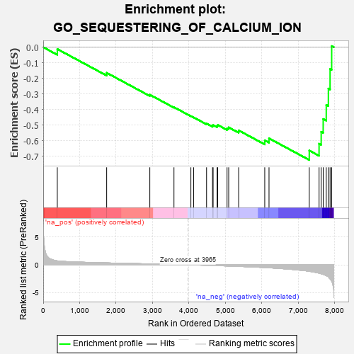
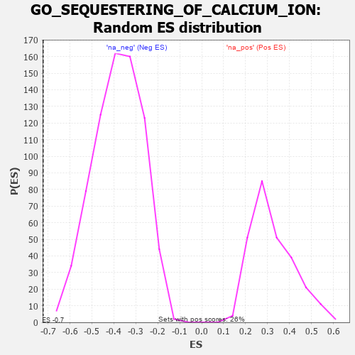

| | | Dataset | 7d |
| Phenotype | NoPhenotypeAvailable |
| Upregulated in class | na_neg |
| GeneSet | GO_SEQUESTERING_OF_CALCIUM_ION |
| Enrichment Score (ES) | -0.72305685 |
| Normalized Enrichment Score (NES) | -1.8856666 |
| Nominal p-value | 0.0 |
| FDR q-value | 0.008177027 |
| FWER p-Value | 0.109 |
Table: GSEA Results Summary

Fig 1: Enrichment plot: GO_SEQUESTERING_OF_CALCIUM_ION
Profile of the Running ES Score & Positions of GeneSet Members on the Rank Ordered List
| PROBE | GENE SYMBOL | GENE_TITLE | RANK IN GENE LIST | RANK METRIC SCORE | RUNNING ES | CORE ENRICHMENT | | 1 | BAX | | | 387 | 0.711 | -0.0119 | No |
| 2 | JPH1 | | | 1741 | 0.347 | -0.1641 | No |
| 3 | ERO1A | | | 2925 | 0.162 | -0.3046 | No |
| 4 | CHERP | | | 3587 | 0.062 | -0.3845 | No |
| 5 | ATG5 | | | 4051 | -0.016 | -0.4420 | No |
| 6 | ABL1 | | | 4125 | -0.027 | -0.4498 | No |
| 7 | JPH3 | | | 4481 | -0.091 | -0.4897 | No |
| 8 | LETM1 | | | 4644 | -0.127 | -0.5036 | No |
| 9 | ITPR1 | | | 4661 | -0.130 | -0.4988 | No |
| 10 | PLCG1 | | | 4770 | -0.151 | -0.5046 | No |
| 11 | MYO5A | | | 4787 | -0.155 | -0.4985 | No |
| 12 | PDPK1 | | | 5043 | -0.207 | -0.5199 | No |
| 13 | DRD2 | | | 5088 | -0.221 | -0.5140 | No |
| 14 | ITPR3 | | | 5361 | -0.288 | -0.5333 | No |
| 15 | CALR | | | 6077 | -0.499 | -0.5974 | No |
| 16 | ATP7B | | | 6194 | -0.535 | -0.5843 | No |
| 17 | ANK2 | | | 7298 | -1.170 | -0.6624 | Yes |
| 18 | CALM1 | | | 7567 | -1.499 | -0.6185 | Yes |
| 19 | TRPA1 | | | 7625 | -1.608 | -0.5423 | Yes |
| 20 | TRPM2 | | | 7680 | -1.712 | -0.4604 | Yes |
| 21 | PDE4D | | | 7764 | -1.944 | -0.3701 | Yes |
| 22 | PKD2 | | | 7822 | -2.167 | -0.2650 | Yes |
| 23 | CALM3 | | | 7869 | -2.525 | -0.1400 | Yes |
| 24 | NPSR1 | | | 7913 | -2.947 | 0.0073 | Yes |
Table: GSEA details [plain text format]

Fig 2: GO_SEQUESTERING_OF_CALCIUM_ION: Random ES distribution
Gene set null distribution of ES for GO_SEQUESTERING_OF_CALCIUM_ION